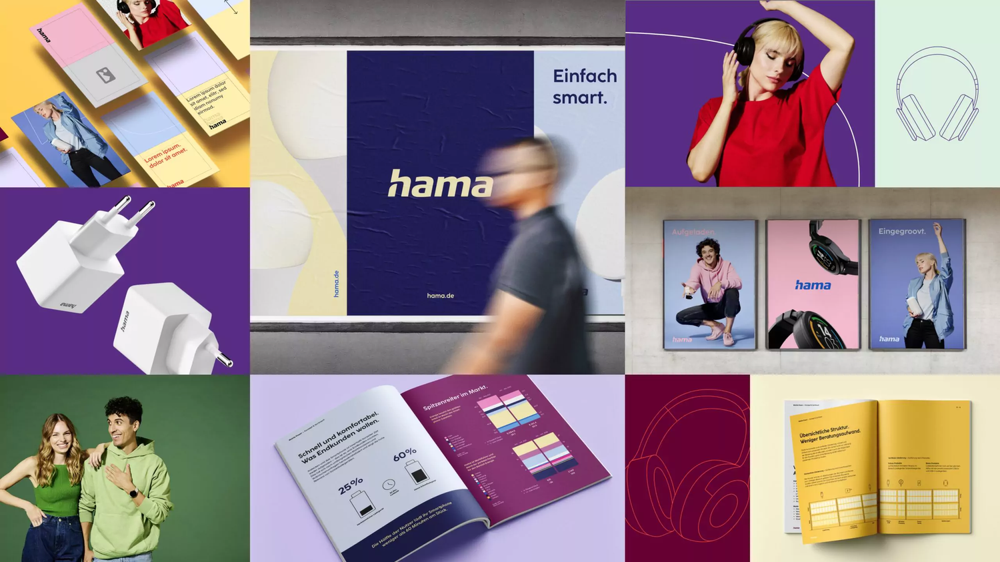
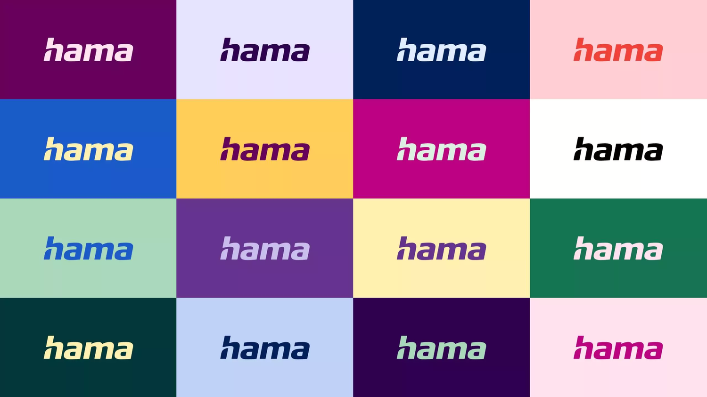
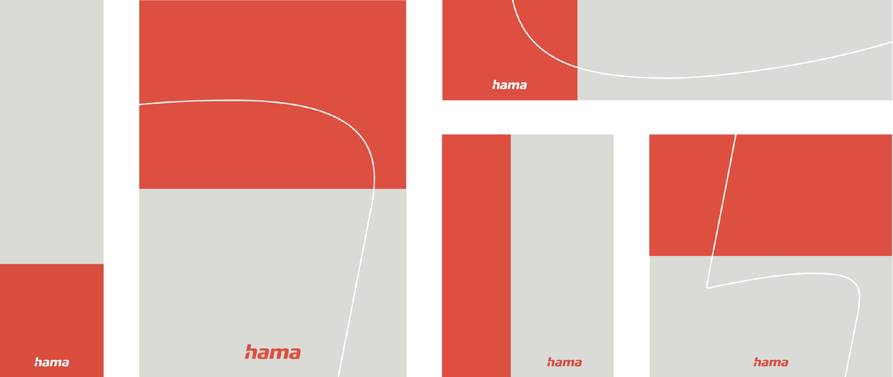
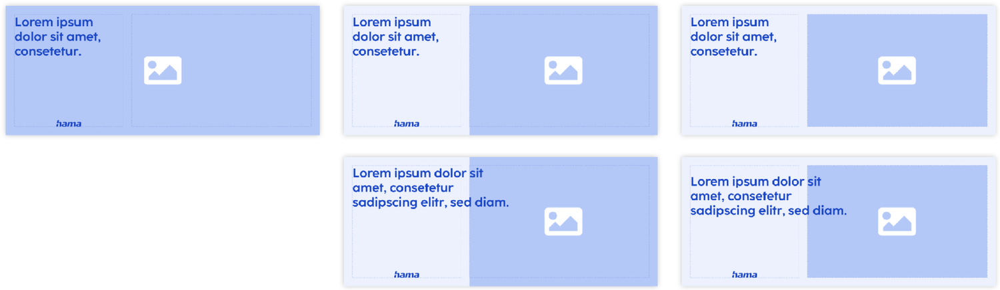
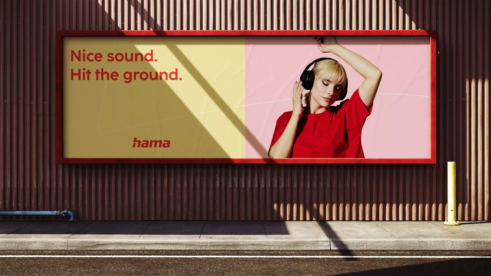
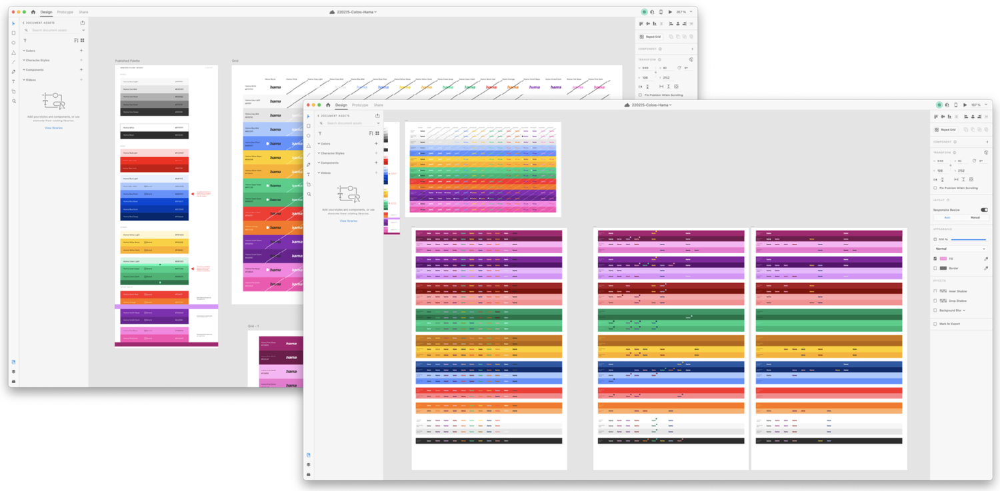
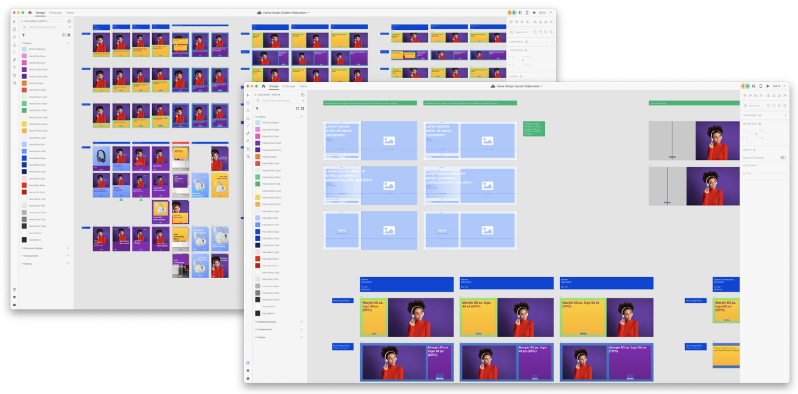
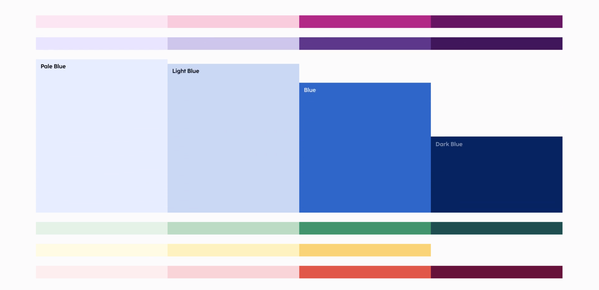

Hama, fabricant mondial d'accessoires tech aux 18 000 références, opère un virage vers la vente en ligne. En devenant une marque directe-au-consommateur, Hama veut renforcer sa présence, créer un lien direct avec ses clients et offrir une expérience d'achat personnalisée.

La diversité est au cœur de la marque : une large palette et des combinaisons flexibles. Ce système permet des déclinaisons ciblées par audience ou support, tout en gardant la reconnaissance de marque. La cohérence naît de son extension à la mise en scène, la lumière et la photographie.
L'accent a été mis sur des combinaisons variées et des contrastes optimaux. En sélectionnant soigneusement teintes, nuances et tons, l'objectif était de créer des visuels plaisants, avec une attention méticuleuse aux contrastes texte, image et fond, pour la lisibilité et l'accessibilité.
Au cœur de la mise en page : la division de l'espace, horizontale et verticale. Simplicité et audace guident des compositions vives : couleurs éclatantes, typographie soignée, imagerie forte, pour un rendu engageant et épuré, quel que soit le format.






